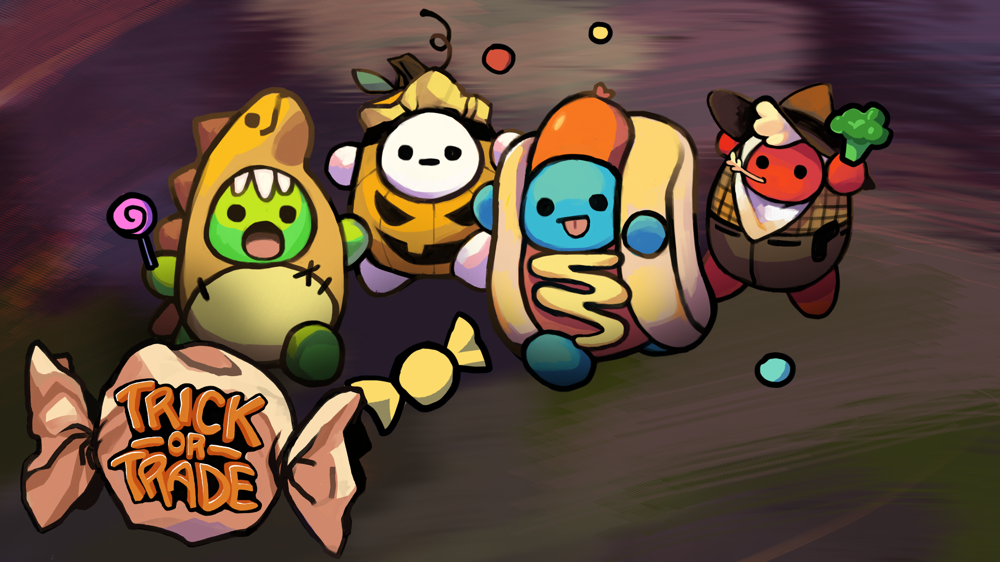

Trick or Trade
A hybrid digital-and-tabletop party game inspired by childhood trick-or-treating. Players compete in a fast-paced digital phase to collect candy while sabotaging one another, then use the candy earned to negotiate trades and complete scoring combinations in a tabletop phase. Performance in each phase directly influences the next, creating a feedback loop between digital action and face-to-face social play.

Role
Game Designer
Lead Developer
Tools
Unity FMOD Cinemachine
Events & Awards
New York University Game Center Showcase 2022
Key Contributions
- Sole developer of the digital game, implementing gameplay systems, split-screen multiplayer, and controller support for up to 4 local players
- Designed and implemented multiplayer interaction systems centered on candy collection, competition, and player-to-player theft mechanics
- Balanced player movement, resource spawning, special item effects, and candy-stealing mechanics to promote competitive and engaging local multiplayer gameplay
- Refined digital and tabletop systems through playtesting to create a cohesive hybrid gameplay experience
Features
Digital Trick-or-Treating
Explore the neighborhood, collect candy before time runs out, and disrupt opponents by stealing their candy.

Rapid Trading & Negotiation
Exchange candy freely with other players to complete scoring combinations, encouraging social interaction, bluffing, and deal-making.

Hybrid Digital–Tabletop Gameplay
Results from the digital phase determine the resources available during the tabletop phase, while tabletop outcomes influence future digital rounds.